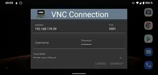
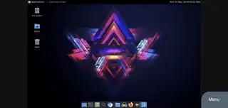

TSVNC
شبكات وملفات
Fork of https://github.com/antlersoft/android-vnc-viewer enhanced for newer Android releases. Uses Material Design for the connection UI and Gradle to build. Converted from Eclipse to Android Studio project. Most of the features of the original are not there yet. It was tested on a Galaxy Tab S6 and
✓ ترخيص مفتوح (GPL-2.0-or-later) · آخر تحديث: 2021-01-25
0.7.6الإصدار
3.2 MBالحجم
GPL-2.0-or-laterالرخصة
Open in Kanzتحميل APK (3.2 MB)
Download APK
SHA-256: 244765a040cd75a7594ff4c27323a5f260fa1d3d7768e86527ff49ed67d96788


امسح الكود لفتح صفحة التطبيق
Scan to open this app page
لو كنز مش متثبت عندك: نزّل متجر كنز.
Not installed? Get the Kanz store.